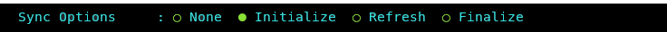

Clone a Database
The Db2 Shift clone option is used to take an existing Db2 database that is currently on-premise, and clone it into a directory. This cloned database can then be transported to another server and be deployed at that location.
The advantage of cloning is that the destination does not need to be connected to the source location and the deployment of the clone can be done at a more convenient time.
The Db2 Shift program requires the following information:
- Source Database details
- Clone Options
The destination details are not required to clone a database.
The syntax for creating a cloned database is:
db2shift
Required Options
--mode=clone
--source-dbname=flights
--source-owner=db2inst1
--clone-dir=/tmp/cache
Optional Settings
--online or --offline
--threads=4
--exclude-functions
--sync=[start_sync, rerun_sync, finish_sync]
--blank-slate=[true|false] --gen-settings
--verify
The panel that provides this capability:
Mode Option
Syntax: --mode=clone
The MODE option determines what steps the Db2 Shift program will take to move your database to the new location.
The CLONE option can be used to create a copy of database to be moved to another location and then deployed. This feature is useful in situations where the target system cannot be reached through the network due to firewall issues.
Source Database
Syntax: --source-database=""

The source database is the name of the database that you want to move to the new location. Note that you can have the same or different database name at the target. If you provide a different database name at the target, the program will copy the database from the source and place it on the target and use the existing name.
Alert! If you are going to use this cloned copy to shift the database to Cloud Pak for Data, and your INSTANCE userid is not db2inst1, you must execute the following SQL commands from a userid that has SECADM authority:
GRANT SECADM ON DATABASE TO db2inst1
GRANT DBADM ON DATABASE TO db2inst1
The db2inst1 userid does not need to exist in the Operating system in order to grant these privileges to the userid. This
requirement does not apply to other Db2 Shift environments. If db2inst1 is not defined as a SECADM and DBADM user in the
database, the Data Management Console feature of CP4D will not be able to access the database nor will it be able to monitor it.
Source or Instance Owner
Syntax: --source-owner="instance name"

The Db2 Shift program makes the assumption that the current userid you are logged into is the owner of the instance. This is necessary due to the requirement to access the underlying files that are used by Db2. If you supply the source owner value, Db2 Shift will double check that you are working in the correct instance and the settings files are consistent.
Clone Directory
Syntax: --clone-dir=""

The cloned copy of the database will be placed into the directory that is
specified by this field. When the database is cloned, the contents
of the directory can be moved to a new location and the --mode=apply_clone
option used to shift the contents of the clone into the Db2 database.
Stored Procedures and Functions
Syntax: --exclude-functions
By default, the Db2 Shift command will automatically move all external stored procedures and functions
that are found in the $HOME/sqllib/function path to the new destination. All SQLPL and PL/SQL routines
are moved as part of the database move, so there is no migration required for those routines.
Use the exclude flag to prevent any external functions being moved to the destination.
Synchronization Options
Syntax: --sync=[start_sync, rerun_sync, finish_sync]

The Db2 Shift program has two methods of moving the database to the destination. The traditional method is to take one pass at the database and move everything at once. During the finishing process, the program will briefly suspend the database (depending on settings) and perform a final refresh. This last step will pick up any database objects that may have changed over the course of the move.
The total amount of time the database is suspended is directly related to how much information has changed during the shift process. In the event that you have large amount of changes, the final refresh may too long an outage. To minimize this outage, you can use the synchronization options provided.
The default setting is do a complete shift operation without intermediate sync operations.
To initialize the synchronization option, the first Db2 Shift command will use the sync option.
Syntax: --sync=start_sync

This initial step will instruct Db2 Shift to copy all of the required database objects to the target system. Once the copies are complete, the program will end processing and leave the target system in an incomplete state. During this process the source database is operational and it will not be suspended.
When there is an appropriate moment, the database movement can
be finalized with the finish_sync option.
Syntax: --sync=finish_sync

The finish_sync option will do one final pass against the source
database and then it will finalize the database movement on the
destination site. During the last pass the finish process will
suspend the database to get a consistent database environment.
Once this step completes, the destination database will be
available.
In the event that the source system has high update volumes, there
may be a need to do multiple sync operations to minimize the
finalize step. The Db2 Shift command will need to be told
that it is syncing the database again, but not to start from
scratch. The control files generated by the --sync=start_sync option
will allow Db2 Shift to move database objects that are new
or have changed since the initial synchronization request. The
command to do the sync and only refresh the database objects
requires the use of the rerun_sync option.
Syntax: --sync=rerun_sync

The rerun_sync option indicates to the Db2 Shift program to
start syncing process to look for delta changes only.
The --sync=rerun_sync process can be run repeatedly until
the amount of changes between runs is minimized. When an appropriate
timeslot is available, the shift can be finalized by using the
finish_sync option.
Syntax: --sync=finish_sync
The finish_sync option will perform the final pass against the source
database and complete the shift process as before.
In summary, the standard shift operation will complete in one step (no
--sync option is used). The --sync=start_sync option allows you
to gradually move a database over time. For a gradual
database shift, use the start_sync option on the first run. This will move
an initial set of database files to the target. Then use the rerun_sync option
on subsequent runs to copy any files that may have been added or changed to
the database. When you are ready to finalize the shift, use the finish_sync
option to gather any remaining files and complete the shift operation on
the target system.
Metadata Generation
Syntax: --blank-slate=[true|false], --gen-settings, --verify-only

The Db2 Shift command generates metadata that is used during the shift process. This metadata is key to determining which objects need to be moved from a source to destination as well as validating that the source can be successfully moved.
Generating metadata requires access to the source and destination systems. If for some reason the connection to the source or destination is unavailable, the existing metadata files can still be used. In most cases you will not need to adjust these settings unless you have encountered a shift error.
Blank Slate
Syntax: --blank-slate=true
The --blank-slate option determines whether or not the existing metadata is refreshed. The default is value
for --blank-slate is true which will display in the GUI as Refresh. The --blank-slate option will
delete any existing metadata files and recreate them on your system during the shift operation. The
default option is true which will result in new source and destination settings being generated.
If you are importing settings files from other systems, or if you need to rerun the shift process without regenerating the files,
use the --blank-slate=false option. When Db2 Shift executes it will use the existing metadata in the working directory and
attempt to use those settings.
Syntax: --blank-slate=false

One scenario that involves the use of --blank-slate=false occurs when a shift operation fails at the target OC/Kubernetes pod
because of a communication error. The database at the destination will be left in an inconsistent state and must be rebuilt
by the shift process. The settings for the destination database can no longer be retrieved because the database cannot be
started. Because of this reason, you must use the existing destination settings that were generated when you first ran the
Db2 Shift command.
Generate Settings
Syntax: --blank-slate=true, --gen-settings

The --gen-settings (Generate Settings) option is used in conjunction with --blank-slate. The use of --gen-settings
will prevent Db2 Shift from continuing execution after the metadata files have been created.
Verification
Syntax: --verify-only

The --verify-only option will generate the metadata files and check the connectivity and all settings and then stop
execution. If --verify-only completes successfully, the Db2 Shift command will be able to execute the shift process.
Online or Offline Move
Syntax: --online, --offline

By default, the Db2 Shift command will suspend the database while it completes the last scan of the files. During this
period of time, the database will not complete any insert, update, or delete transactions. This will result in a consistent
database at the destination, but some transactions will not have been committed to the database. If the database
at the destination must be identical to the source database, then you must choose the --offline option which
will shut down the database so there will not be any transactions outstanding when the shift is completed.
Note: The period of time that the database is suspended or stopped is dependent on the changes that have occurred in the database from the time the shift operation started to the time when copying of the data is complete. The changes that have occurred during this period of time needs to be captured during the final step. It is during this step that the database must be suspended or stopped. During the initial scan the database will remain completely online and will not be impacted by the shift utility from a transaction perspective. However, since there is a large amount of disk reads taking place, it may impact bufferpool read performance.
The --offline mode must be used when shifting a database that requires a migration from an older release of
Db2. This option must be specified when shifting Db2 versions 10.5 or 11.1.
Performance: Threading
Syntax: --threads=[0..8]

The copy phase of the Db2 Shift program is able to use multiple threads to transmit data to a destination. This settings allows you to increase the parallelism up to 8 threads. As you increase the number of threads, the amount of data being transmitted increases, at the expense of greater CPU usage and network congestion. The default value is 4 which strikes a balance between overhead and network performance.